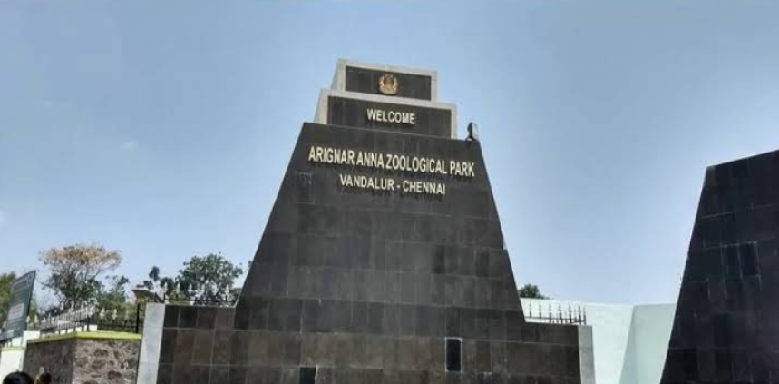

Vandalur Zoo (Arignar Anna Zoological Park)
Located in Vandalur, Chennai, it is one of the largest zoological parks in South Asia. Spread over 1,500 acres, the zoo is home to more than 2,000 species of animals, birds, and reptiles from around the world. It is famous for its wide safari rides, butterfly house, aquarium, and walk-through aviary. A popular weekend destination, the zoo offers both educational and recreational experiences for visitors of all ages.
📍 Location: Vandalur, Chennai, Tamil Nadu
🕒 Timings: 9:00 AM – 5:00 PM (Closed on Tuesdays)
🎟️ Attractions: Lion Safari, Elephant Safari, Aviaries, Butterfly House, Aquarium, Endangered Species Conservation